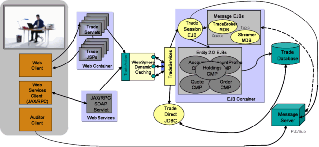

Overview
The WebSphereTM performance benchmark sample provides a suite of IBM developed workloads for characterizing performance of the WebSphere Application Server. The workloads consist of an end to end web application and a full set of primitives. The applications are a collection of Java classes, Java Servlets, Java Server Pages, Web Services, and Enterprise Java Beans built to open J2EE APIs. Together these provide versatile and portable test cases designed to measure aspects of scalability and performance.

Trade J2EE Components
Model-View-Controller Architecture
Trade
Trade is the WebSphere end-to-end benchmark and performance sample application. The new Trade benchmark has been re-designed and developed to cover WebSphere's significantly expanding programming model. This provides a real world workload driving WebSphere's implementation of J2EE 1.4 and Web Services including key WebSphere performance components and features.
Trade's new design spans J2EE 1.4 including the new EJB 2.1 component architecture, Message Driven beans, transactions (1-phase, 2-phase commit) and Web Services (SOAP, WSDL). Trade also highlights key WebSphere performance components such as DynaCache, WebSphere Edge Server and Web Services.
Primitives
The Primitives provide a set of workloads to individually test various components of the WebSphere Application Server. The primitives leverage the Trade application infrastructure to test specific WebSphere J2EE components such as the servlet engine, JSP support, EJB Entitiy, Session and Message Driven beans, HTTP Session support and more.
Additional overview information is included in the FAQ